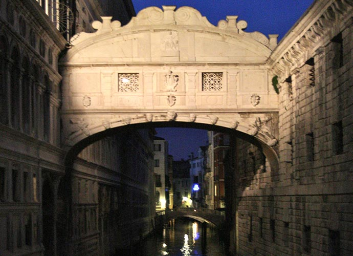
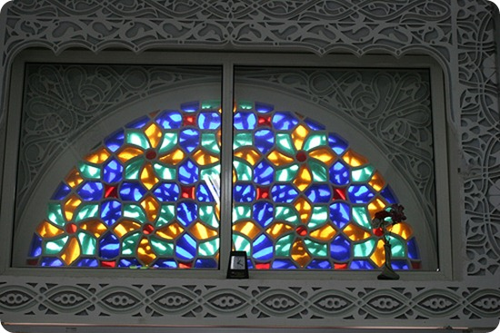
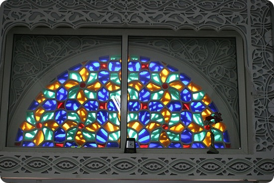

When you have arrived at Phyllis, you rejoice in observing
all the bridges over the canals. Each different
from the others: cambered, covered, on pillars
, on
barges, suspended, with tracery balustrades. And
what a variety of windows looks down on the streets:
mullioned, Moorish, lancet
, pointed , surmounted by
lunettes or stained-glass roses
, surmounted by
lunettes or stained-glass roses ; how many kinds of
pavement cover the ground: cobbles, slabs, gravel
,
blue and white tiles. At every point the city offers
surprises to your view: a caper bush jutting from the
fortress' walls, the statues of three queens on corbels,
an onion dome with three smaller onions threaded on
the spire. "Happy the man who has Phyllis before
his eyes each day and who never ceases seeing the
things it contains," you cry, with regret at having to
leave the city when you can barely graze it with your
glance.
But it so happens that, instead, you must stay in
Phyllis and spend the rest of your days there. Soon
the city fades before your eyes, the rose windows are
expunged, the statues on the corbels, the domes,
Like all of Phyllis's inhabitants, you follow zigzag
lines from one street to another, you distinguish the
patches of sunlight from the patches of shade, a door
here, a stairway there, a bench where you can put
down your basket, a hole where your foot stumbles if
you are not careful. All the rest of the city is invisible. Phyllis is a space in which routes are drawn between
points suspended in the void: the shortest way
to reach that certain merchant's tent, avoiding that
certain creditor's window. Your footsteps follow not
what is outside the eyes, but what is within, buried,
erased. If, of two arcades, one continues to seem
more joyous, it is because thirty years ago a girl went
by there, with broad, embroidered sleeves, or else it
is only because that arcade catches the light at a certain
hour like that other arcade, you cannot recall
where.
Millions of eyes look up at windows, bridges,
capers, and they might be scanning a blank page.
Many are the cities like Phyllis, which elude the gaze
of all, except the man who catches them by surprise.
; how many kinds of
pavement cover the ground: cobbles, slabs, gravel
,
blue and white tiles. At every point the city offers
surprises to your view: a caper bush jutting from the
fortress' walls, the statues of three queens on corbels,
an onion dome with three smaller onions threaded on
the spire. "Happy the man who has Phyllis before
his eyes each day and who never ceases seeing the
things it contains," you cry, with regret at having to
leave the city when you can barely graze it with your
glance.
But it so happens that, instead, you must stay in
Phyllis and spend the rest of your days there. Soon
the city fades before your eyes, the rose windows are
expunged, the statues on the corbels, the domes,
Like all of Phyllis's inhabitants, you follow zigzag
lines from one street to another, you distinguish the
patches of sunlight from the patches of shade, a door
here, a stairway there, a bench where you can put
down your basket, a hole where your foot stumbles if
you are not careful. All the rest of the city is invisible. Phyllis is a space in which routes are drawn between
points suspended in the void: the shortest way
to reach that certain merchant's tent, avoiding that
certain creditor's window. Your footsteps follow not
what is outside the eyes, but what is within, buried,
erased. If, of two arcades, one continues to seem
more joyous, it is because thirty years ago a girl went
by there, with broad, embroidered sleeves, or else it
is only because that arcade catches the light at a certain
hour like that other arcade, you cannot recall
where.
Millions of eyes look up at windows, bridges,
capers, and they might be scanning a blank page.
Many are the cities like Phyllis, which elude the gaze
of all, except the man who catches them by surprise.